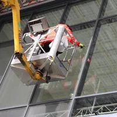
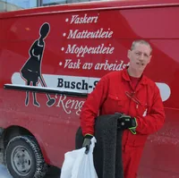

Regelmessig renhold
Daglig renhold, tilpasset lokalene og hvor mange som bruker dem.
Busch Sørensen Rengjøringsbyrå AS ble etablert i 1967 og har siden vokst til å bli en av Bodø-distriktets ledende leverandører av renhold og relaterte tjenester.

Daglig renhold er den viktigste faktoren for et godt arbeidsmiljø – og vi tar også de oppgavene som bare gjøres innimellom.
Daglig renhold, tilpasset lokalene og hvor mange som bruker dem.
Utvendig og innvendig, skilleglass, persienner og fasader.
Rundvask og vedlikehold av lokalene, når det trengs.
Matter som tas med, vaskes og leveres tilbake.
Kantine med mat og drift, der det er avtalt.
Vaktmestertjenester som del av den faste avtalen.

ByggerengjøringKlart for overlevering etter byggefasen.
GulvbehandlingBehandling som gjør gulvet lettere å holde rent.Ring 75 54 57 00, så ser vi på lokalene sammen og regner på hva det koster.